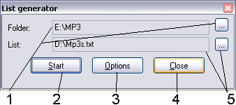
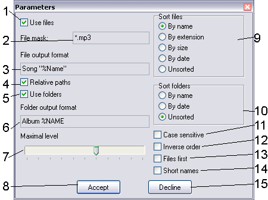

~ListGen
Description:
The program is intended for creation of lists of files of the computer (similarly
to command dir from DOS), but allows to set the output format (that is impossible for dir).

- Start folder, scanning will start from it. Button to the right - to browse.
- Start scanning. During scanning changes the name to Stop. The pressing this
button can borrow some time, do not press the button too frequent, while there is a process
- Options - listing parameters.
- Exit from the program with saving of parameters
- Output file, listing will be written to it
After pressing Option button, next dialog will appear:

- Use files - write to listing file names in special format
- File mask - OS standart mask. Files, satisfying that mask will be sent to output file
- Format line - string, containing special keys, which will be replaced with appropriate parameters:
- %NAME - name, converted to upper case
- %name - name, converted to lower case
- %Name - name without case conversion
- %DIR,%dir,%Dir - same, for folders
- %EXT,%ext,%Ext - save, for extensions
- %FULL,%full,%Full - same, for full filename
- %date - file creation date
- %time - file creation time
- %size,%sizeb,%sizek,%sizem - accordingly
file size using autoselect, in bytes, in kilobytes, in megabytes
If you need % in output file, write it twice.
- Relative path - use path from start folder, or full path otherwise.
- Use folders - write to listing folder names in special format
- Format line - line, containing special keys, which will be replaced with appropriate parameters:
- %Name,%name,%Name - same as in file's format string: folder name.
- Maximal level - how many folders' reenrance will program make.
- Accept changes (and close)
- Sort files - how to sort files in listing
- Sort folders - how to sort folders in listing (sort by date works sometimes
strange)
- Case sensitive sort
- Reverse sort (from large to small)
- Files first - in listing, first write file names (need for deleting, for example)
otherwise, folder will be first (for creating, for example).
- Short names - as in DOS (for BAT files creating, for example...)
- Decline changes (and close).
Features:
- All settings saved.
- Slowly works (in comparison with dir):-)